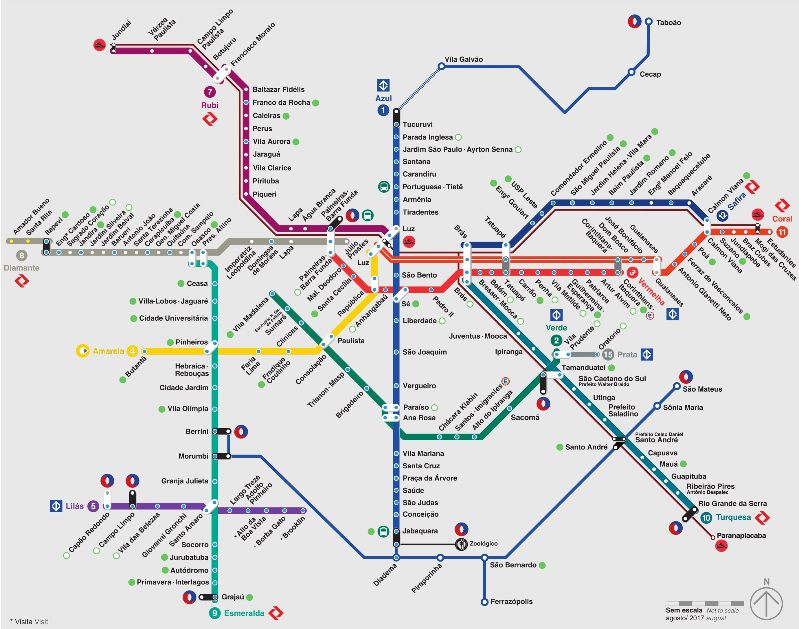

Aquário de São Paulo
Lazer e Bebê
Olá, sejam bem-vindos ao Guia: Lazer & Bebê. Aqui encontrarão dicas e sugestões de espaços em São Paulo para passear, relaxar e se divertir com o público infantil- BEBÊS!
Olá, sejam bem-vindos ao Guia: Lazer & Bebê. Aqui encontrarão dicas e sugestões de espaços em São Paulo para passear, relaxar e se divertir com o público infantil- BEBÊS!
A cidade de SÃO PAULO, com o lema “Non ducor, duco”, frase em latim, presente em seu brasão, que significa “não sou conduzido, conduzo”, é um município brasileiro, capital do estado de São Paulo, considerada o principal centro financeiro da América do Sul e é a sétima cidade mais populosa do planeta com mais de 12 milhões de habitantes. São Paulo também é considerada a décima quarta cidade mais globalizada do planeta, com o décimo maior PIB do mundo.
Moderna, histórica, agitada, esportiva, intelectual e muitos outros adjetivos, contemplam a cidade de São Paulo, que segue entre as capitais mais cosmopolitas e interessantes do planeta. Com muitos parques, praças, shoppings, museus, teatros, a cidade também é conhecida pela sua diversidade cultural, com seu leque de espaços voltados para o lazer.
Turistas, moradores de São Paulo: aproveitem a cidade!
A cidade de São Paulo a cada dia que passa tem investido mais em transporte metroviário, meio de transporte que leva cerca de 4,7 milhões de passageiros por dia, segundo o governo do Estado de São Paulo.
A Companhia do Metropolitano de São Paulo - Metrô foi criada no dia 24 de abril de 1968. As obras da Linha Norte-Sul foram iniciadas oito meses depois. Em 1972, a primeira viagem de trem foi realizada entre as estações Jabaquara e Saúde. Em 1974, o trecho Jabaquara - Vila Mariana começou a operar comercialmente.
Atualmente, existem as Linhas:
O sistema está integrado à CPTM nas estações Luz, Pinheiros, Tamanduateí, Brás, Palmeiras-Barra Funda, Tatuapé, Corinthians-Itaquera e Santo Amaro e aos outros modais de transporte na cidade de São Paulo.
Abaixo segue um mapa para se localizar/locomover no metrô de São Paulo.
Para se locomover em São Paulo de uma forma prática, rápida e eficaz, o METRÔ é a melhor opção.
Parques de São Paulo:
Cinemas de São Paulo:
“O CineMaterna organiza sessões especiais de cinema para mães com bebês de até 18 meses. Papais e acompanhantes são sempre bem-vindos. Os filmes exibidos em geral são de temática adulta - portanto, entretenimento para mães e pais, mas em ambiente especialmente preparado para os bebês. As sessões acontecem em diversas cidades do Brasil. Para participar das sessões, basta ir ao cinema no dia e hora da sessão. Não é preciso reservar lugares.”
Quando: Todos os meses, de segunda-feira a quinta-feira. Poucos sábados.
Ingresso: Conforme o valor dos ingressos para adultos das sessões e cinemas tradicionais.
Atividades artísticas e educativas:
“Inspirada pela experiência de gestar e parir sua primeira filha, a bailarina Tatiana Tardioli reviu sua vida, referências e influências. Assim nasceu a Dança Materna no ano de 2008. Depois de mais de uma década de estudos, investigações e práticas em danças contemporâneas, populares, estudos de educação somática, fisioterapia e transdiciplinaridade, Tatiana criou o método, atualmente presente em todas as regiões do país, em mais de 40 cidades. A Dança Materna propicia momentos de cumplicidade muito preciosos na construção de um vínculo sadio e contribui para a saúde e o equilíbrio espiritual, emocional e físico da mãe e do bebê. Oferecemos diversas modalidades de aulas, para mães e bebês, desde a barriga até os três anos.”
Para Mães e Bebês de Colo e Engatinhantes.
Locais:
Brincando Pé - Rua Pedroso de Camargo, 319
Chácara Santo Antônio - Segundas-feiras às 14h
CPTM - Estação Morumbi (Linha 09 - Esmeralda)
Casa Moara - Rua Guararapes, 634
Brooklin - Quintas - Feiras às 14h30
CPTM - Estação Berrini (Linha 09 - Esmeralda)
Professora: tania.silva@dancamaterna.com.br / (11) 99899-4179
Valores da aula:
Plano mensal: R$ 260,00, plano trimestral: R$ 233,00/mês e aulas avulsas: R$70,00 - Pagamento em dinheiro ou cheque.
Local: Avenida João Dias, 2476 - Santo Amaro, São Paulo.
CPTM - Estação Giovanni Gronchi (Linha 05 - Lilás)
Quando: Quinta-feira e sexta-feira às 20h30. Sábado, Domingos e Feriados às 16h, 18h e 20h30.
Ingresso: Inteira - A partir de R$62,50
Baladas/Discotecas/Festas:
Mãetinê é uma festa criada pela artista Dj Paula Mar (Paula Marcelle) que nos primeiros meses no seu pós parto sentiu falta de um espaço para dançar e se divertir, e que autorizassem a entrada de sua filha recém-nascida. A matinê é voltada para as mães, pais e famílias com crianças/bebês.
Horário: À partir das 14h.
Informações gerais (local, ingressos, etc): Facebook - Mâetinê.
Museus:
Local: Av. Paulista, 37 - Bela Vista, São Paulo Metrô - Brigadeiro (Linha 02 - Verde)
Horário de funcionamento: De terça-feira a sábado das 10h às 22h. De domingos e feriados das 10h às 18h.
Local: Avenida Pedro Álvares Cabral, s/n – Parque Ibirapuera – Portão 10 (acesso pelo portão 3) , São Paulo
Metrô - São Joaquim (Linha 01 - Azul)
Horário de funcionamento: De terça-feira a domingo. Das 10h às 17h.
Ingresso: Inteira - R$6,00
Local: Avenida Mercúrio, s/n - Pq Dom Pedro II, Brás, São Paulo
Metrô - São Bento (Linha 01 - Azul)
Horário de funcionamento: De terça-feira a domingo das 10h às 17h.
Ingresso: R$6,00
Crianças menores de 4 anos de idade isentas.
Local: Avenida Brigadeiro Faria Lima, 2705 - Jardim Paulistano, São Paulo
Metrô - Faria Lima (Linha 04 - Amarela)
Horário de funcionamento: De terça-feira a domingo. Das 10h às 18h.
Ingresso: Gratuito
Local: Rua Ricardo Cavatton, 251 - Lapa, São Paulo
Metrô - Palmeiras Barra Funda (Linha 03 - Vermelha)
Horário de funcionamento: De terça-feira a domingo das 10h às 17h.
Ingresso: Inteira - A partir de R$50,00
Crianças menores de 2 anos de idade isentas.
Local: Praça Charles Miller, s/n - Pacaembu, São Paulo
Metrô - Paulista (Linha 04 - Amarela)
Horário de funcionamento: De terça-feira a sexta-feira das 9h às 16h. E sábados, domingos e feriados das 10h às 17h.
Ingresso: Inteira - R$10,00
Crianças menores de 7 anos de idade isentas.
Local: Praça da Luz, 2 - Luz, São Paulo
Metrô - Luz (Linha 1 azul)
Horário de funcionamento: De quarta-feira a domingo. Das 10h às 17h30.
Ingresso: Inteira - R$6,00
Shoppings:
Endereço: Travessa Casalbuono, 120 - Vila Guilherme, São Paulo.
Metrô - Carandiru (Linha - 01 Azul).
Horário de funcionamento: De segunda-feira a sábado: 10h às 22h e domingos/feriados das 14h às 20h.
Endereço: Avenida Rebouças, 3970 - Pinheiros, São Paulo.
CPTM - Estação Hebraica Rebouças (Linha 09 - Esmeralda).
Horário de funcionamento: De segunda-feira a sábado das 10h às 22h e domingos/feriados das 14h às 20h.
Endereço: Avenida Regente Feijó, 1739 - Tatuapé, São Paulo.
Metrô - Tatuapé (Linha 03 - Vermelha).
Horário de funcionamento: De segunda-feira a sábado das 10h às 22h e domingos/feriados das 14h às 20h.
Endereço: Avenida Roque Petroni Júnior, 1089 - Jardim das Acácias, São Paulo.
CPTM - Estação Morumbi (Linha 09 - Esmeralda).
Horário de funcionamento: De segunda-feira a sábado das 10h às 22h e domingos/feriados das 14h às 20h.
Endereço: Av. Paulista, 1230.
Metrô - Trianon MASP (Linha 02 - Verde).
Horário de funcionamento: De segunda-feira a sábado das 10h às 22h e domingos/feriados das 14h às 20h.
Endereço: Alameda Terracota, 545, Espaço Cerâmica - São Caetano do Sul.
Metrô - Sacomã (Linha 02 - Verde).
Horário de funcionamento: De segunda-feira a sábado das 10h30 às 22h30 e domingos/feriados das 14h às 20h.
Outros:
Espaço de brincar/oficinas.
Rua Joaquim Antunes, 778 - Pinheiros, São Paulo
Horário de funcionamento: De terça-feira a sexta-feira das 15h às 18h.
Valores:
Hora avulsa no Espaço de Brincar: R$ 55,00
Oficina avulsa: R$ 83,00
Período avulso Ninho de Pequeninos (por 3h) – Espaço de brincar + 2 oficinas: R$ 150,00
Inscrições: contato@mamusca.com.br
Local: Av. Celso Garcia, 4142 - Tatuapé, São Paulo.
Metrô - Tatuapé (Linha 3 - Vermelha).
Horário de funcionamento: De segunda a sexta-feira, das 10h às 19h / sábados, das 9h às 16h.
Ingresso: Gratuito.
Segurança e conforto aos pequenos em primeiro lugar!
Olá,
meu nome é Milena Viana, mas podem me chamar de Mi. Budista, apaixonada pelos animais, por romances e por tudo que envolva o assunto maternidade.
Tenho 22 anos de idade (pois é, dois patinhos na lagoa) e sou mamãe do Arthurzinho, esposa do Arthur e filha da Dona Sônia (em memória) e do Senhor Clóvis.
Atualmente, estudo Gestão de Turismo no Instituto Federal de São Paulo - IFSP, sou Técnica em Administração pela ETEC Getúlio Vargas e Comissária de Voo formada pelo Centro Educacional de Aviação do Brasil. Hoje trabalho em um grande museu da cidade de São Paulo.
Falando em São Paulo, cidade plural, coração do Brasil, agitada, divertida, romântica, a cidade que tem um espaço especial em meu coração.
Sempre aproveitei e desfrutei de todos os seus espaços de lazer e atrativos turísticos oferecidos. Moro aqui há 22 anos. Minha infância e adolescência passei na região do Ipiranga (Zona Sul) e depois de casada me mudei para o Butantã (Zona Oeste).
Em fevereiro de 2017 fui presenteada pelos deuses com um lindo garotinho, nasce um bebê, nasce uma MÃE. E uma pessoa agitada como eu, agitada como a cidade de São Paulo, não poderia parar suas atividades (risos).
Sempre antenada, sentia falta de locais para ir acompanhada com meu filho. Mas, pesquisando muito, percebi que não faltavam espaços e sim divulgação deles.
Com isto, decidi unir o útil ao agradável, montar o meu plano experimental em .turismo, criando esta plataforma, este canal para auxiliar mamães, papais e todos aqueles que buscam locais para ir com bebês!
Bom tour no site, espero que aproveitem as dicas e curtam muito a cidade com os pequenos, essa fase passa tão rápido não é mesmo? E não existe nada mais gratificante do que arrancar um sorriso de um bebê.
Dúvidas? Críticas? Sugestões? Me procurem!
Cel: 55 11 992687300 - Claro
email: milenade.souzaa@gmail.com
Correspondências para Milena de Souza Viana